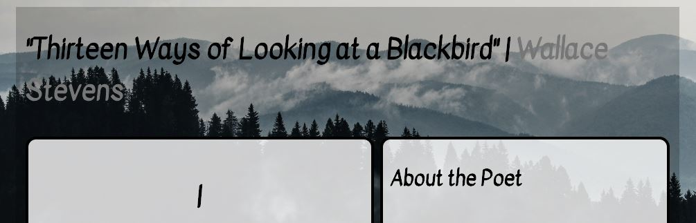
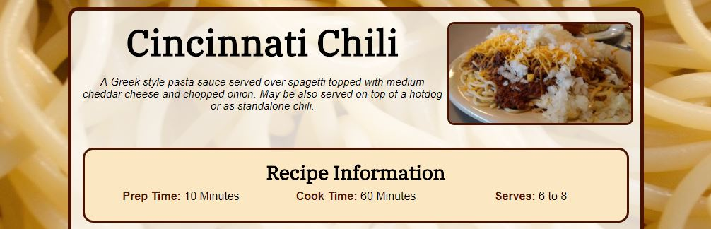
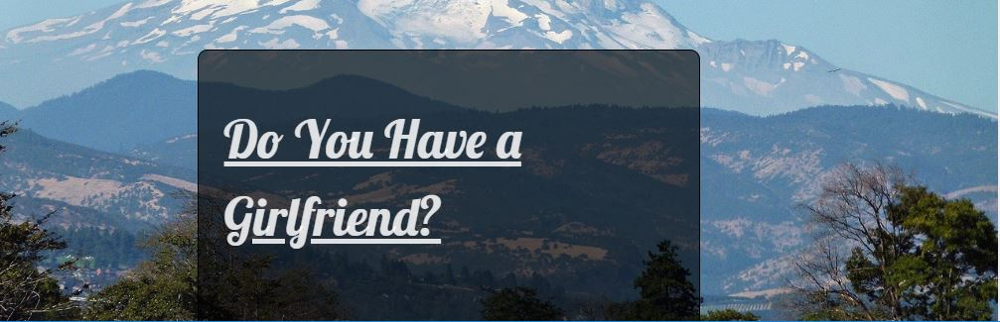

Websites That I Have Hand Coded
Blackbird Project: "Thirteen Ways of Looking at a Blackbird"
This is my first site using HTML5 and CSS3. It is recital of Wallace Stevens' "Thirteen Ways of Looking at a Blackbird."
Recipe Project: Cincinnati Chili
This is my first site using responsive design. It is mobile and tablet friendly. I also included common design elements to give the site and aesthetically pleasing look. I tell readers how to make Cincinnati Chili.
Sequential Project: "Do You Have a Girlfriend?"
This is a sequential narrative where I retell my short story "Do You Have a Girlfriend?"